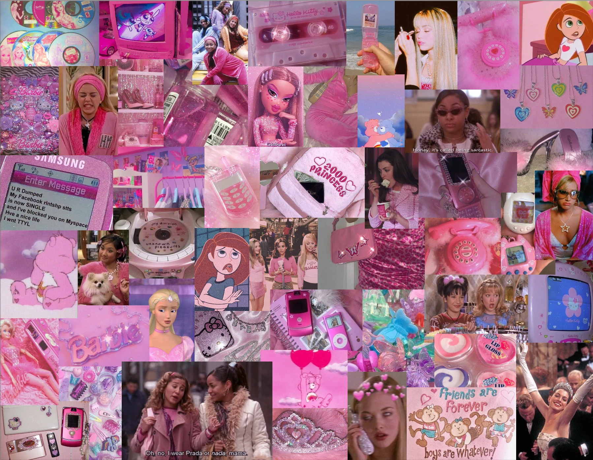
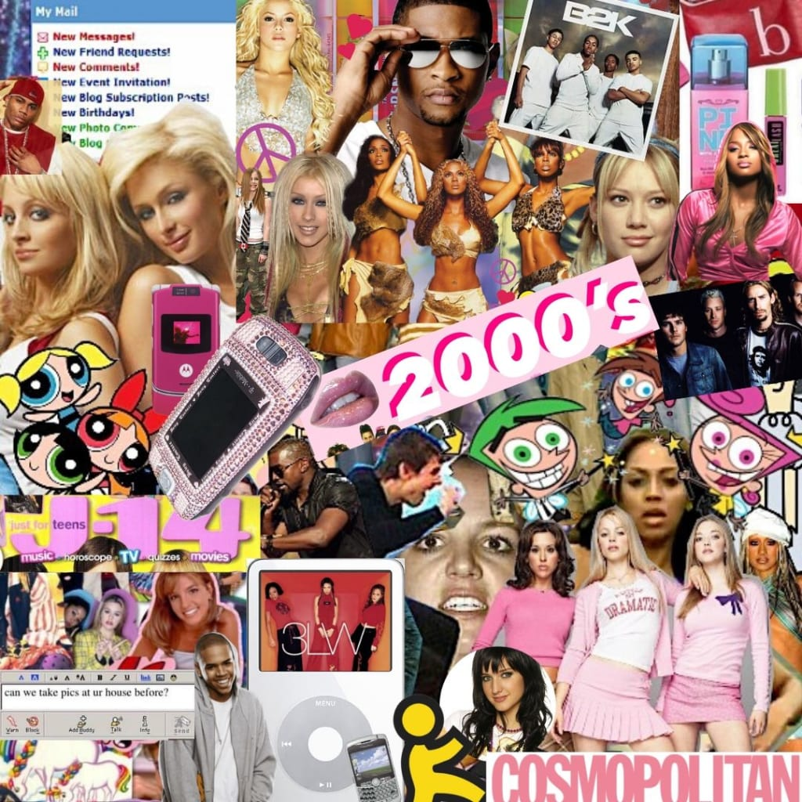
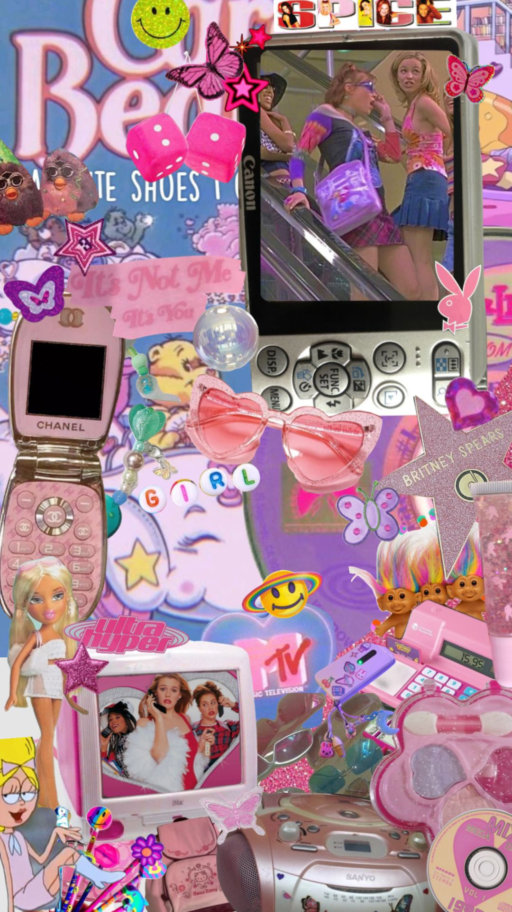

Welcome to Y2K Nostalgia
You know that feeling when you come across across an old show or song that you once loved but forgot about? Suddenly you're back in that moment and for a second you're reliving the past. Ugh best feeling ever! At Nostalgia Junkies it's our mission to help you unlock those hidden gems. Enjoy and relive your favorite ooos and ahhhs from the best decade ever, the 2000's.

Why Was Y2k So Trendy?

Nostalgia often fuels trends, and as millennials and Gen Z individuals grow older, they tend to look back fondly on the cultural elements of their youth. The late 90s and early 2000s hold a special place in the hearts of many, and the Y2K trend allows people to reminisce about the music, fashion, technology, and pop culture of that era. So lets reminisce, shall we?

The Y2K trend offers a sense of escapism, allowing people to transport themselves back to a seemingly simpler time before the rise of social media influencers, political polarization, and global crises. It evokes a sense of nostalgia for a period when technology was less pervasive, and life seemed more carefree for many.